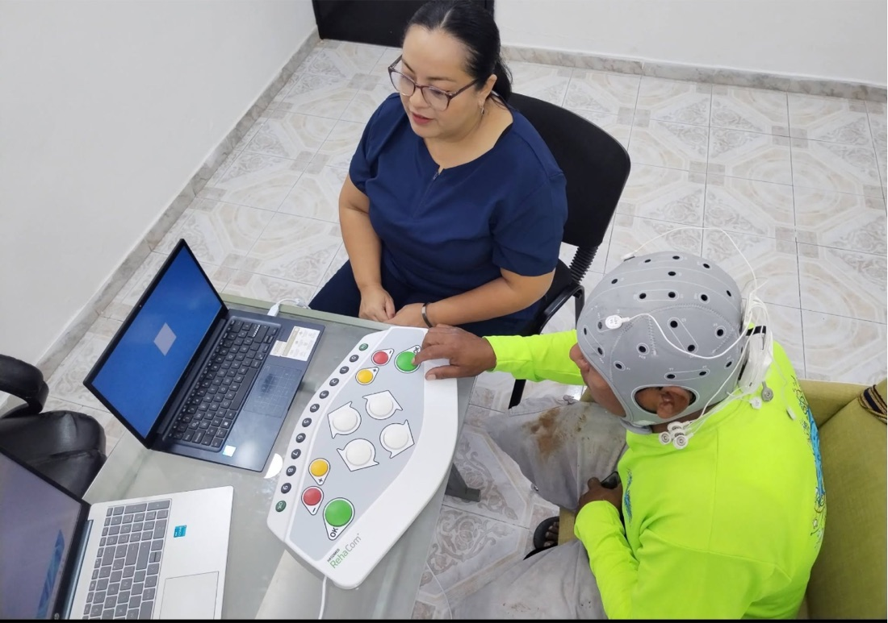
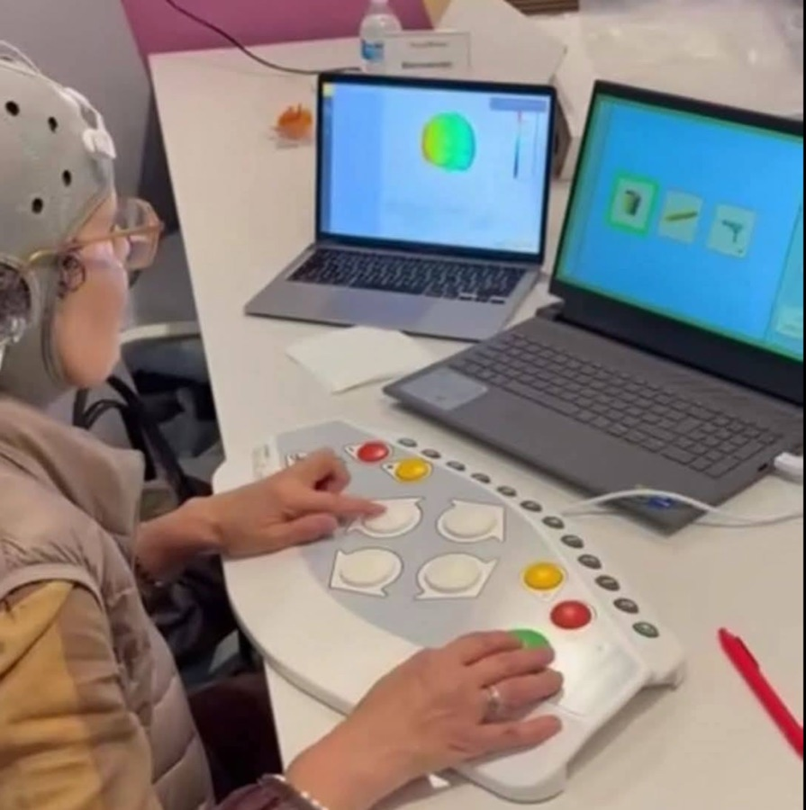

Terapia psicológica
Psicoterapia individual, presencial o en línea, para depresión, ansiedad, estrés postraumático y gestión emocional.
Te acompaño a recuperar tu bienestar emocional y cognitivo con un enfoque científico y humano. Atención presencial en Cozumel o en línea desde donde estés.


Como psicólogo, te ofrezco un espacio seguro y confidencial para explorar los retos emocionales que estás enfrentando.
Desde la neuropsicología, evalúo y rehabilito funciones como la atención, la memoria y el lenguaje, afectadas por lesiones, enfermedades neurológicas o el envejecimiento.
Mi objetivo es que recuperes claridad, autonomía y calidad de vida, paso a paso.
Las heridas que no se ven son las que más duelen. Aquí podemos empezar a sanarlas.
Psicoterapia individual, presencial o en línea, para depresión, ansiedad, estrés postraumático y gestión emocional.
Valoración de atención, memoria, funciones ejecutivas y lenguaje para orientar el diagnóstico y el tratamiento.
Programas de estimulación y compensación cognitiva tras un evento vascular cerebral, traumatismo o deterioro.
Neuromodulación no invasiva con corriente directa de baja intensidad, como complemento en protocolos como la afasia post-EVC.
Soy el Psic. Francisco Javier Cárdenas Luna. Creo que comprender la relación entre el cerebro, los pensamientos y las emociones es la base para un cambio real.
Acompaño a adolescentes, adultos y adultos mayores en momentos difíciles, y trabajo en la rehabilitación de quienes han visto afectadas sus funciones cognitivas.
Francisco Cárdenas
Métodos basados en evidencia para manejar estrés, ansiedad y depresión.
Perfiles cognitivos objetivos para diagnósticos diferenciales.
Estimulación cognitiva y tDCS para recuperar funciones afectadas.
Me encantará saber de ti. Cuéntame un poco sobre lo que estás viviendo y te responderé pronto para encontrar juntos el mejor camino.